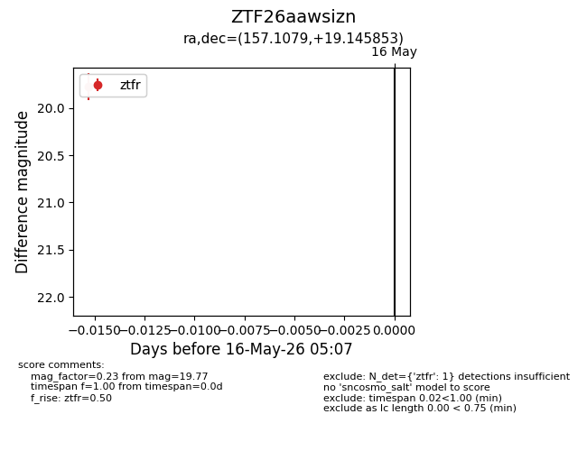
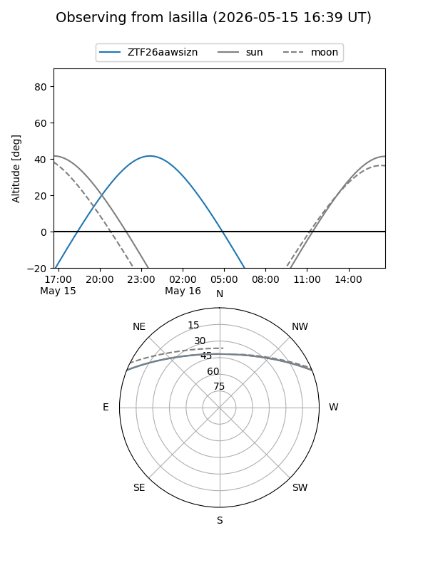
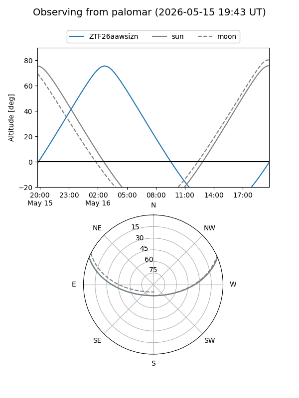

ZTF26aawsizn
Target ZTF26aawsizn at 2026-05-16 05:09
Aliases and brokers:
FINK: link
Lasair: link
ALeRCE: link
alt names
ZTF26aawsizn (ztf,fink_ztf)
Coordinates:
equatorial (ra, dec) = 157.1079,+19.14585
equatorial (HMS+DMS) = 10:28:25.89,+19:08:45.07
galactic (l, b) = (218.8993,+56.29192)
Flags:
Photometry:
last ztfr=19.77
1 ztfr detections
Lightcurve

Visibility


Additional plots